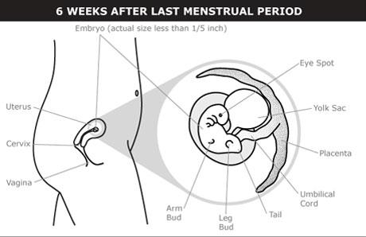
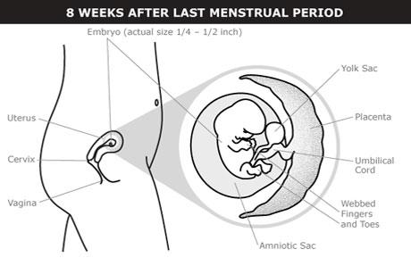

©copy writed by Group II
The ball of cells turns into an embryo at the start of the 6th week. The embryonic stage of pregnancy lasts about 5 weeks. This is when all the major internal organs start developing.
The embryo is less than 1/5 inch (4–5 mm) long.
A part of the embryo starts to show cardiac activity. It sounds like a heartbeat on an ultrasound, but it's not a fully-formed heart — it's the earliest stage of the heart developing.
Buds for arms and legs develop.
The neural tube begins forming. The neural tube will later form the brain, spinal cord, and major nerves.
The bud of a tail develops.
The umbilical cord begins developing.

The embryo is 1/4 to 1/2 inch (7–14 mm) long.
The heart has formed.
Webbed fingers and toes develop.
The arms bend at the elbows.
External ears, eyes, eyelids, liver, and upper lip begin forming.
The sex organs are the same — neither female nor male — in all embryos until the 7th or 8th week. If a gene triggers the development of testes, the embryo develops as a biological male. If there isn’t a trigger, the embryo develops ovaries and becomes biologically female.

Pregnancy symptoms often become very noticeable when you’re 2 months pregnant. Common discomforts like breast tenderness, feeling very tired, peeing more often, heartburn, nausea, and vomiting usually get worse. Your body produces extra blood during pregnancy, and your heart beats faster and harder than usual to carry the extra blood.
©copy writed by Group II